In short
- Open the Fuel form (yellow bar). Check the lorry, your name and the date.
- Tap Take receipt photo. The form reads the receipt and fills in the RM and litres for you.
- Check them against the receipt, then type the odometer.
- Tap Save. Wait until you see Saved.
- No refuel today? Tap the red No refuel button.
1Open the form
Open the link for your branch:
Open the Mentakab Fuel formclfproject01.github.io/clf-transport-forms/CLF_Fuel_Form.html Open the Kuantan Fuel formclfproject01.github.io/clf-transport-forms/CLF_Fuel_Form.html?branch=KTNThe Kuantan link ends with ?branch=KTN. Your old link still works.
- Yellow bar and FUEL = the fuel form. The POD form has a blue bar. Make sure you open the right one.
- Branch name. It must be your branch. If it shows another branch, you opened the wrong link.
- Green dot = internet. Grey dot = no internet.
- BM EN to change the language. The phone remembers your choice, for the POD form too.
2Lorry, driver and date
The Trip details box is at the very top. The first time, it is open and empty.
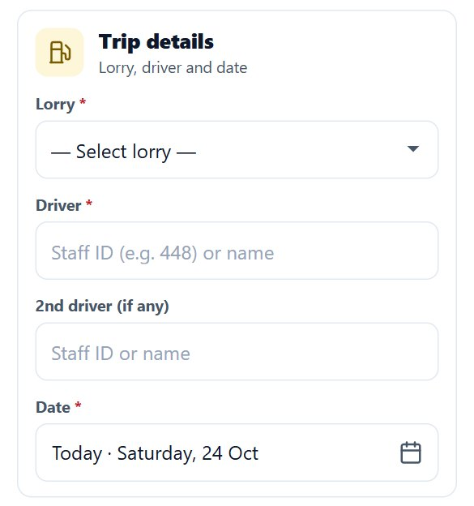
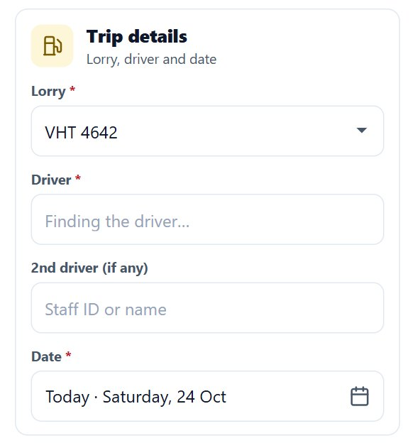
- Lorry: pick the lorry you fuelled first. The Driver box says Finding the driver… for a moment.
- Driver: your name usually fills itself in, from the office plan for that lorry or from the phone's memory. Check it is right. If it is empty or wrong, type your staff ID (for example
901) or your name, then tap your name in the list. - 2nd driver (if any): fill it only if two of you are in the lorry. If you are alone, leave it empty.
- Date: already filled with today's date (it says Today). Change it only if you fuelled on another day. Tomorrow cannot be picked.
Change the lorry = check the name again. Every time the lorry changes, the name is looked up again for the new lorry. Make sure the name shown is yours.
The box folds into 3 lines
When the lorry, name and date are complete, the box folds into 3 lines: lorry, date, name. Tap Change to open it, Done to fold it again. The phone remembers your lorry and name, so tomorrow everything is filled in already.
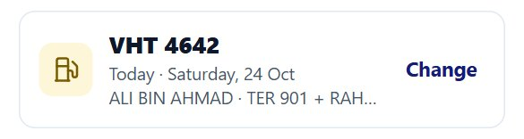
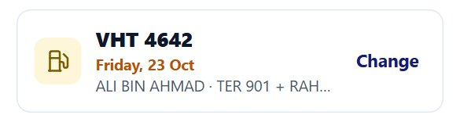
3Take the receipt photo
Once the lorry and name are set, the fuel box has only two buttons: Take receipt photo and the red No refuel.
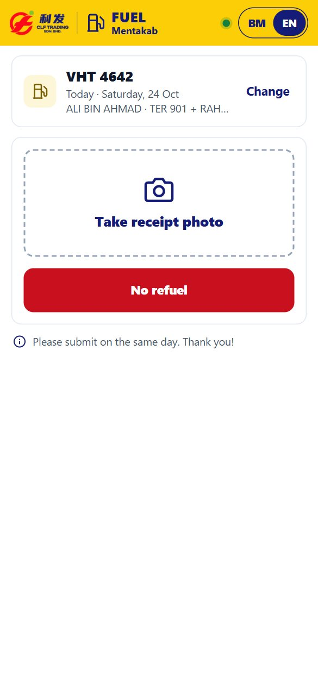
- Tap Take receipt photo. Choose the camera, or pick a receipt photo you already took from the gallery.
- Photograph the whole receipt, as shown below.
- Wait a few seconds. The form says Reading the receipt….

A good photo:
- Lay the receipt flat, shoot it close, in good light.
- The whole receipt in the frame, numbers not blurred.
- One photo, one receipt.
- Keep your fingers off the numbers.
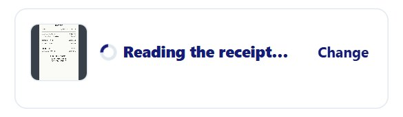
4Check RM and litres
When the receipt can be read for sure, the form fills in Amount (RM) and Litres for you.
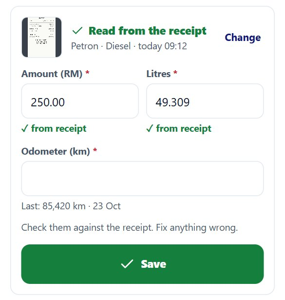
- ✓ Read from the receipt, and under it: station · fuel · date and time on the receipt. If the receipt date is not the fuel date, or the fuel is not diesel, this line turns orange. Check your receipt.
- The RM and litres boxes are filled, marked ✓ from receipt.
- Check them against the receipt. If one is wrong, fix it. The ✓ from receipt mark goes away when you change a number.
When the form does not fill them in
The form only fills in numbers it is sure of. When it is not sure, the boxes stay empty:
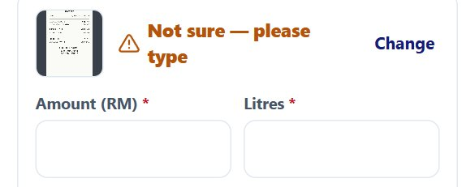
| Message | What to do |
|---|---|
| Not sure — please type Could not read it — please type | Type the RM and litres from the receipt. |
| Photo blurry Receipt too far Numbers covered Too dark or shiny | Tap Retake photo and take a better photo. Or type them yourself. |
| 2 receipts in 1 photo | Tap Retake photo and photograph one receipt only. |
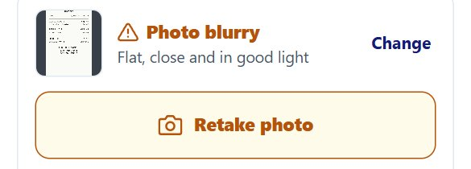
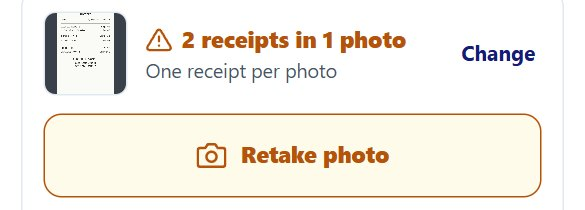
PREPAY receipts (no litres)
Some receipts say * PREPAY SALE IS NOT FINAL *. These receipts have no litres, so the form cannot fill them in. Before you leave the pump, look at the pump display and type the RM and litres as shown on the pump.
5Odometer
Type the number on the lorry's odometer now, every time you fuel. Not a guess, not yesterday's number.
- Under the box you see the last reading, for example Last: 85,420 km · 23 Oct. Your number must be higher.
- If it says in green Already sent today, this lorry already has a fuel entry today. Do not send the same receipt twice.
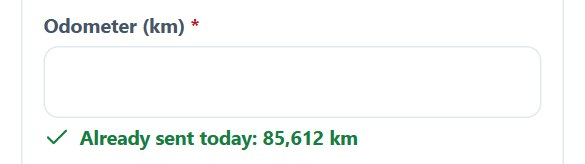
Why every time? The office works out distance and fuel per km from today's odometer minus the last one. A wrong number = wrong figures.
6Save
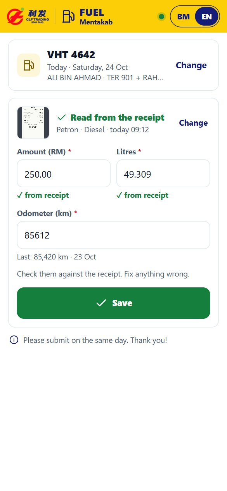
- Tap Save. A blue Saving… screen appears. Do not close the form.
- Wait for the Saved screen, with the RM, litres, lorry, odometer, date and time.
- Tap Done. Your lorry and name stay for the next receipt.
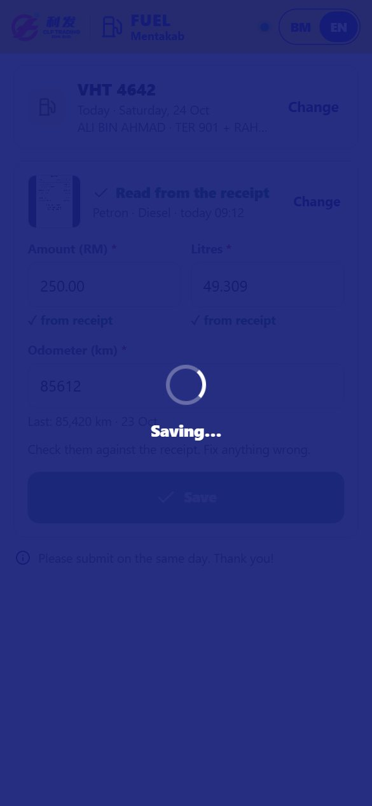
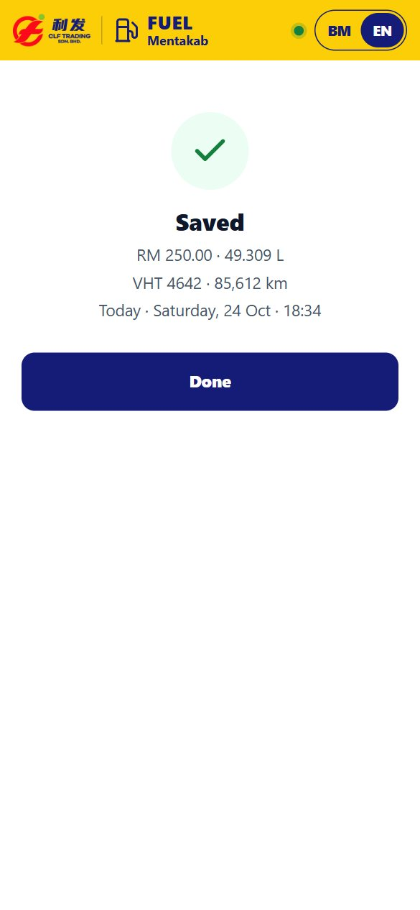
Not confirmed yet
With a weak signal, the form may not be able to make sure the entry arrived. It will not say “Saved”. Instead an orange box appears:
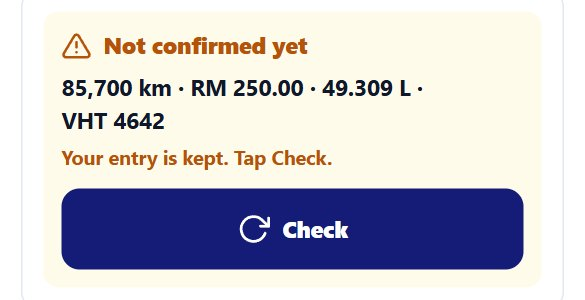
- Tap Check when you have signal. The form checks whether the entry arrived.
- If it says Still not confirmed, wait a minute and tap Check again.
- Only if it says It did not reach the system. Tap Send again., tap Send again.
Do not fill in a new form for the same receipt while this box is there. Your entry is kept on the phone, even if the form is closed.
Not saved. Try again.
These red words mean the entry did not arrive. Everything you filled in is still there. Tap Save again. With no internet you see No signal. Try again when you have signal.
7No refuel
No fuel today? Do not fill in the whole form.
- Make sure your lorry and name are right.
- Tap the red No refuel button (before taking a photo).
- The question No refuel today? appears with the lorry and name. Tap Yes, send. Tap Cancel if you tapped by mistake.
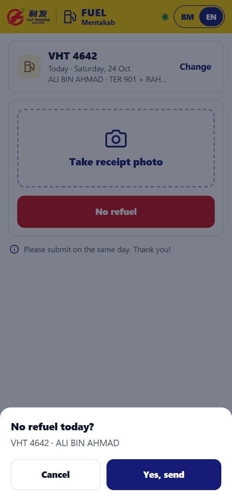
No odometer, RM, litres or photo needed. If the signal drops, you see Not sure it was saved. Check your signal and try again. Tap again when you have signal.
8Checks before saving
When you tap Save, the form checks your numbers. Nothing is sent until they are right.
| You see | Meaning and what to do |
|---|---|
| Required | This box is empty. Fill it in. |
| Over RM 500 — check again | More than RM 500 cannot be saved. Check the receipt: probably a typing mistake. If it really is more than RM 500, tell your supervisor. |
| Odometer lower than last time? | Your odometer is lower than the last reading. Tap Change and fix it. Tap Yes, correct only if the number really is right. |
| +2,580 km since last time? | A jump of more than 1,500 km. Usually a typing mistake. Check the odometer. |
| RM 25.00 per litre? Amount and litres swapped? | The price per litre makes no sense. The RM and litres may be swapped, or the litres are wrong. |
| Same as the driver | The 2nd driver is the same person as the driver. Pick someone else or leave it empty. |
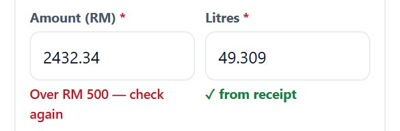
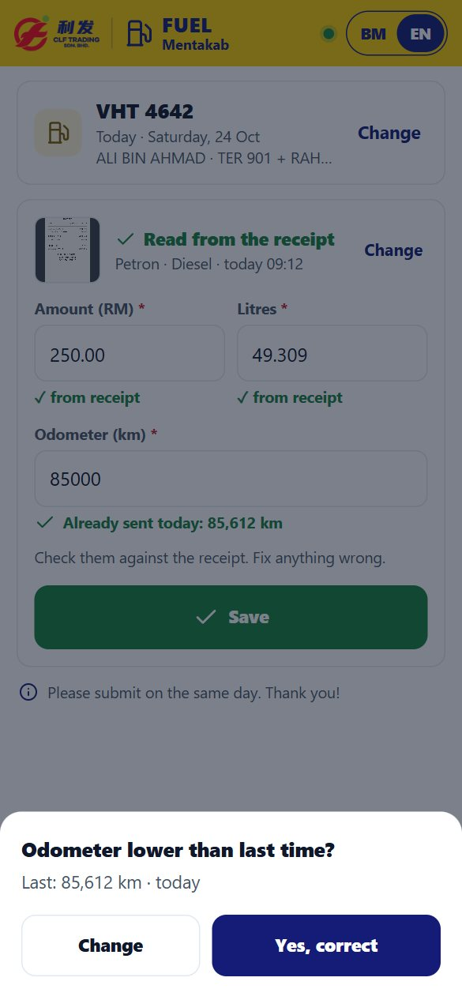
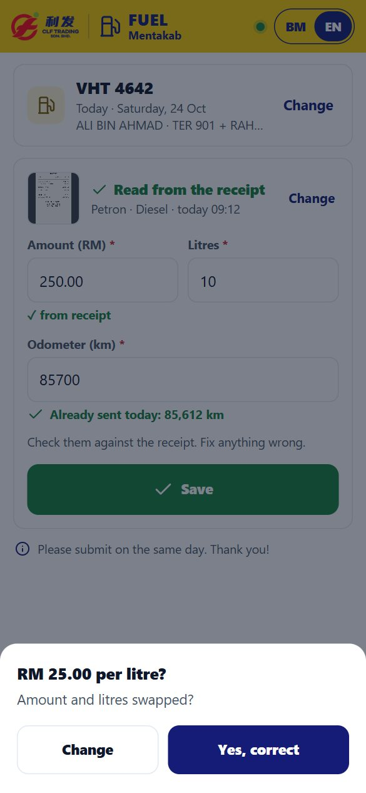
9Common questions
The form disappeared after opening the camera
Some phones close the form while the camera is open. Open the link again. The numbers you already typed are still there (for 1 hour). Take the photo again.
The lorry list does not appear
If the lorry box says ⚠ Tap to retry, tap it. The form also retries by itself.
Grey dot
No internet. You can still fill in the form, but wait for signal before tapping Save.
Wrong date, lorry or name
Tap Change on the trip box and fix it.
Fuelled twice in one day
Send each receipt as its own entry: photo of the first receipt, Save, Done, then photo of the second receipt and Save again.
10Important rules
Please submit on the same day. Thank you! Send it right after fuelling, while the receipt is still in your hand.
- 1 receipt = 1 photo = 1 entry. The whole receipt in the photo, numbers clear.
- The real odometer every time.
- RM and litres must match the receipt. Do not change numbers that are right.
- Do not send the same receipt twice.
- If you see Not confirmed yet, tap Check. Do not fill it in again.